Vamos conhecer um pouco deste trabalho incrivel
Amigurumi fofuras em forma de bonecos
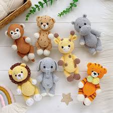
Fofuras feitas de crochê
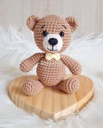
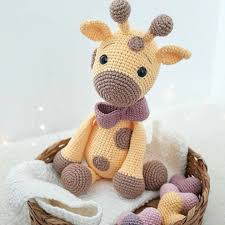
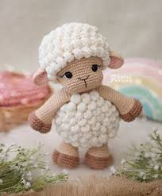
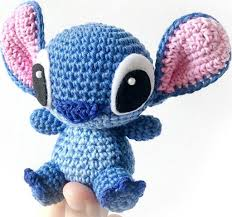
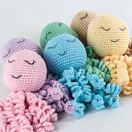
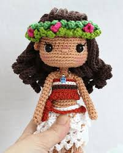
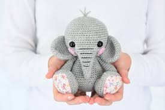
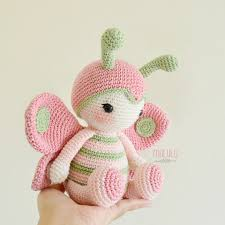
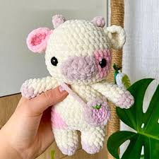
Linha usada:
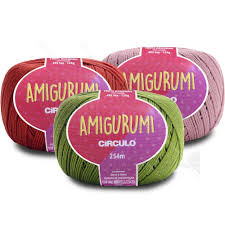
O fio Amigurumi é composto por 100% de algodão mercerizado e tem espessura média
aliada ao rendimento e muita com delicadeza. O resultado é excelente tanto no crochê quanto no tricô: maciez, cores firmes e qualidade. O sucesso do momento no mundo do artesanato
são os Amigurumis, os famosos bichinhos de crochê.
Agulha usada:
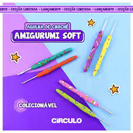
Agulhas de crochê
São a principal ferramenta para fazer um amigurumi.
Príncipe del Crochet recomenda as marcas Clover e Tulip porque o material com que são feitas permite que a linha deslize suavemente e não se enrosque ou estrague.
Segundo o especialista, o tamanho da agulha deve ser de 2.25 até 2.75.
1. Urso
2. Girafa
3.Ovelha
4.Stitch
5.Polvo
6.Moana
7.Elefante
8.Borboleta
9.Vaquinha